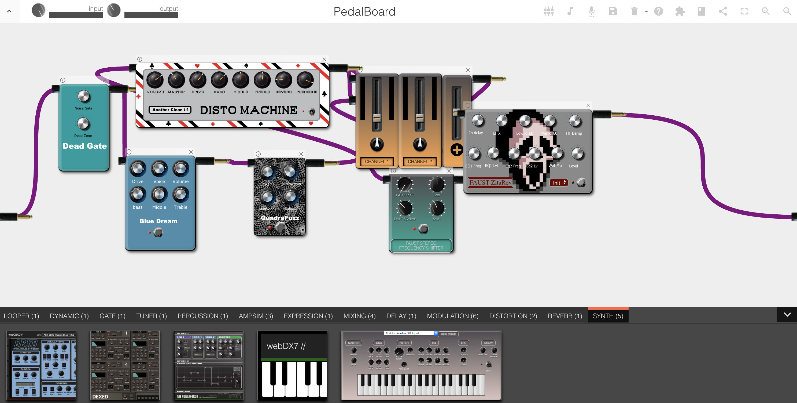
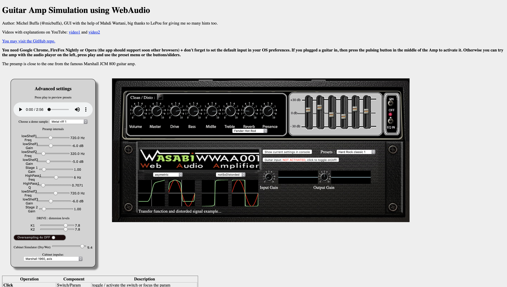
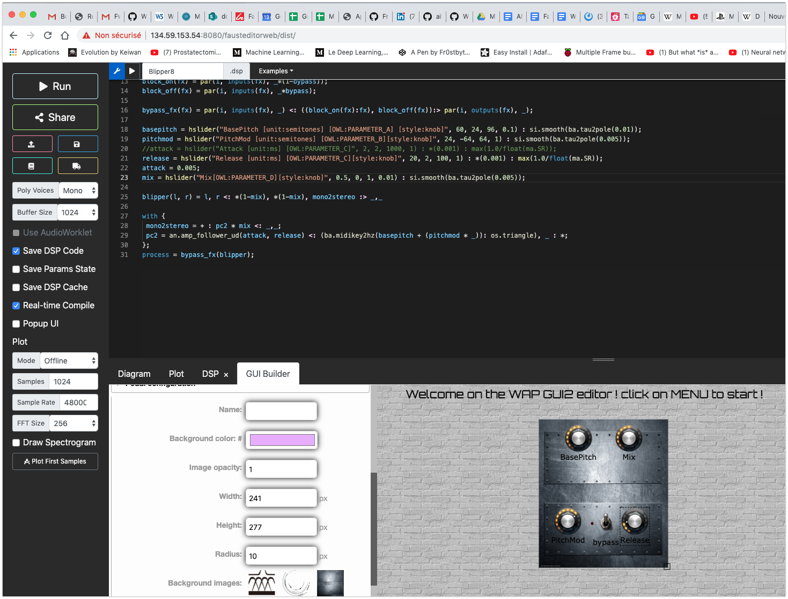
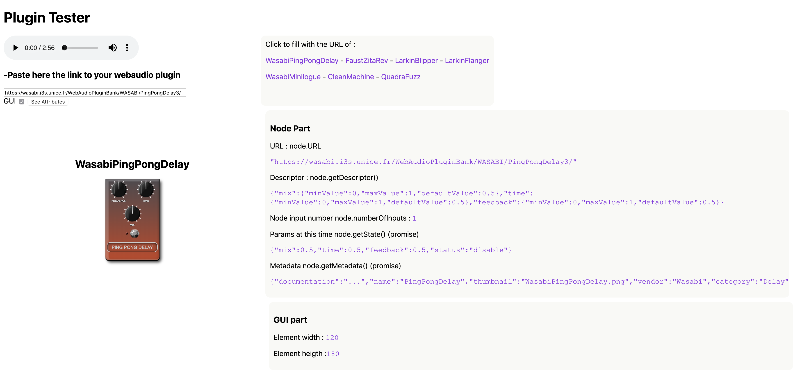
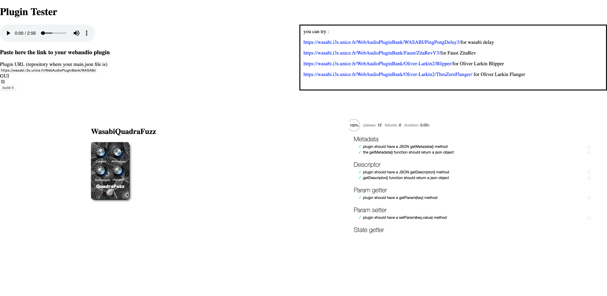
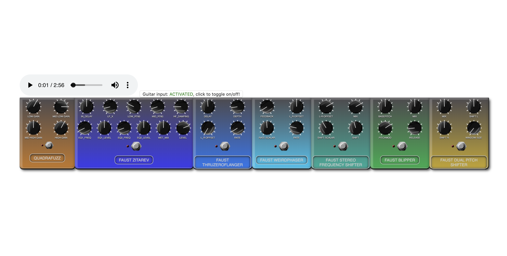

<link rel="import" href="../bower_components/polymer/polymer.html">
<link rel="import" href="../bower_components/paper-material/paper-material.html">
<link rel="import" href="../bower_components/iron-ajax/iron-ajax.html">
<link rel="import" href="../bower_components/paper-tabs/paper-tabs.html">
<link rel="import" href="../bower_components/paper-tabs/paper-tab.html">
<link rel="import" href="../bower_components/iron-icons/iron-icons.html">
<link rel="import" href="../bower_components/paper-icon-button/paper-icon-button.html">
<link rel="import" href="../bower_components/iron-pages/iron-pages.html">
<link rel="import" href="../bower_components/google-youtube/google-youtube.html">
<link rel="import" href="../bower_components/paper-audio-player/paper-audio-player.html">
<!--my_components-->
<link rel="import" href="./modules/show-dialog.html">
<link rel="import" href="./modules/external-links.html">
<link rel="import" href="./modules/external-infos.html">

<dom-module id="page-song">
    <template>
        <!-- CSS -->
        <style>
            * {
                padding: 0px;
                margin: 0px;
                border: 0px;
                border-collapse: collapse;
                box-sizing: border-box;
                vertical-align: top;
            }

            *:focus {
                outline: 0;
            }

            #divSongTitle {
                background: #fff;
                color: #333;
                border-top: 1px solid #eee;
                border-bottom: 1px solid #eee;
                padding: 30px 10px;
                font-size: 36px;
                display: flex;
                justify-content: center;
                position: relative;
            }

            .bg_ytVideo {
                background: #111;
                display: flex;
                flex-direction: row;
                justify-content: center;
            }

            #divPathSong {
                background: #fafafa;
                display: flex;
                flex-direction: row;
                justify-content: space-between;
                align-items: center;
            }

            #divPathSong a:hover {
                background: #eee;
            }

            #divPathSong a:nth-child(1) {
                font-weight: bold;
            }

            #divPathSong a {
                color: #555;
                font-size: 14px;
                padding: 10px;
                display: flex;
                flex-direction: row;
                justify-content: flex-start;
                align-items: center;
                align-content: center;
                text-decoration: none;
                text-align: center;
                /* Chrome all / Safari all */
                -webkit-user-select: all;
                /* Firefox all */
                -moz-user-select: all;
                /* IE 10+ */
                -ms-user-select: all;
                user-select: all;
            }

            #divPathSong a:nth-child(1) img {
                border-radius: 100%;
            }

            #divPathSong span {
                padding: 10px;
                margin: 0;
                /* No support yet */
                user-select: all;
            }

            #divAudio {
                background: #fff;
                border-top: 2px solid #3f51b5;
                position: fixed;
                bottom: 0px;
                left: 0px;
                right: 0px;
                display: flex;
                flex-direction: row;
            }

            #divAudio img {
                width: 50px;
                height: 50px;
            }

            #divAudio paper-audio-player {
                flex: 1;
            }

            paper-material {
                background: #fff;
                margin-bottom: 100px;
            }

            paper-tabs {
                --paper-tabs-selection-bar-color: #3f51b5;
            }

            paper-tab:hover {
                background-color: #f2f2f2;
            }

            paper-tab {
                --paper-tab-ink: #E0E0E0;
            }

            .isClassic {
                color: #ffe52f;
                width: 50px;
                height: 50px;
                margin-top: 15px;
                float: right;
            }

            .song {
                font-size: 2em;
                width: 100%;
            }

            #songInfos {
                font-size: 19px;
            }

            .inherit {
                color: inherit;
                background-color: inherit;
                text-decoration: none;
            }

            a.link_pedalboard:hover {
                background: #3f50b5;
                border: 2px solid #3f50b5;
                color: #eee;
            }

            a.link_pedalboard {
                background: transparent;
                border: 2px solid #3f50b5;
                color: #3f50b5;
                padding: 10px 20px;
                border-radius: 4px;
                margin: 5px;
                font-size: 14px;
                position: absolute;
                top: 18px;
                right: 0px;
                display: inline-block;
                text-decoration: none;
                text-align: center;
            }

            .iframe_src {
                width: 100%;
                height: 1200px;
                border: 0px;
            }

            .div_webaudiotools {
                display: flex;
                flex-direction: row;
                flex-wrap: wrap;
                justify-content: flex-start;
                align-items: stretch;
                padding: 10px;
            }

            .a_webaudiotools:hover {
                border: 2px solid #111;
                color: #111;
            }

            .a_webaudiotools {
                border: 2px solid #3f50b5;
                color: #3f50b5;
                border-radius: 8px;
                display: flex;
                flex-direction: column;
                justify-content: flex-start;
                text-decoration: none;
                text-align: center;
                width: 48%;
                margin: 1%;
            }

            .a_webaudiotools img {
                object-fit: cover;
                border-top-left-radius: 8px;
                border-top-right-radius: 8px;
                object-position: 50% 50%;
                height: 260px;
            }

            .a_webaudiotools span {
                font-size: 16px;
                padding: 20px;
                text-transform: uppercase;
            }

            /** RESPONSIVE */
            @media screen and (max-width: 800px) {
                .div_webaudiotools {
                    flex-direction: column;
                }

                .a_webaudiotools {
                    width: 100%;
                    margin: 2px 0%;
                }
            }
        </style>
        <!-- ajax request to get api information about : auth, artist -->
        <iron-ajax auto url="/search/auth" method="GET" headers="[[headers]]" handle-as="json" last-response="{{auth}}">
        </iron-ajax>
        <iron-ajax id="get_content_artist" auto url="/search/artist/{{_encodeUri(nameArtist)}}" last-response="{{art}}"
            headers="[[headers]]" handle-as="json"></iron-ajax>
        <iron-ajax id="get_content_album" auto
            url="/search/artist/{{_encodeUri(nameArtist)}}/album/{{_encodeUri(nameAlbum)}}" last-response="{{albu}}"
            headers="[[headers]]" handle-as="json"></iron-ajax>
        <iron-ajax id="get_album_song" auto headers="[[headers]]"
            url="/search/album/song/{{_encodeUri(nameArtist)}}/{{_encodeUri(nameSong)}}" last-response="{{albumSong}}"
            handle-as="json"> </iron-ajax>
        <iron-ajax id="get_artistDH" auto url="/extractdiscoveryhub/semreco/{{_splitName(nameSong)}}"
            last-response="{{recommendationsDH}}" headers="[[headers]]" handle-as='json' on-response='handleResponseDH' method="GET" content-type='application/json'>
        </iron-ajax>
        <!--permet de lancer automatiquement la requête get chargeant la page-->
        <iron-ajax id="get_content_auto" auto headers="[[headers]]"
            url="/search/artist/{{_encodeUri(nameArtist)}}/album/{{_encodeUri(nameAlbum)}}/song/{{_encodeUri(nameSong)}}"
            last-response="{{artist}}" handle-as="json"> </iron-ajax>
        <!--permet de faire des requêtes de modification-->
        <iron-ajax id="put_content" method="PUT" headers="[[headers]]" content-type="application/json"></iron-ajax>
        <!-- get covers songs's versions -->
        <iron-ajax auto
            url="/search/get_cover_song/{{_encodeUri(artist.albums.songs.title)}}/{{getBeginLyrics(artist.albums.songs.lyrics)}}"
            method="GET" last-response="{{coversSong}}" handle-as="json" content-type='application/json'></iron-ajax>

        <!-- paper-material : a Material Design container that looks like a lifted piece of paper. Elevation is box-shadow -->
        <paper-material elevation="0">

            <template is="dom-if" if="{{artist}}">
                <paper-tabs selected="{{idxCurrentTab}}">
                    <paper-tab>Home</paper-tab>
                    <paper-tab>DiscoveryHub</paper-tab>
                    <paper-tab>QMUL/chords</paper-tab>
                    <paper-tab>IRCAM/Timeside</paper-tab>
                    <paper-tab>WebAudio tools</paper-tab>
                    <paper-tab>WebAudio plugins</paper-tab>
                    <template is="dom-if" if="{{artist.albums.songs.multitrack_path}}">
                        <paper-tab>Multitracks</paper-tab>
                    </template>
                </paper-tabs>
            </template>

            <iron-pages selected="{{idxCurrentTab}}">
                <!-- TAB_home -->
                <main hidden="{{!TAB_home}}">
                    <div>
                        <template is="dom-if" if="{{auth.isConnected}}">
                            <!-- is user is connected : SHOW RDF -->
                            <template is="dom-if" if="{{artist.albums.songs.rdf}}">
                                <show-dialog labeldialog="RDF {{artist.albums.songs.title}} :"
                                    content="{{artist.albums.songs.rdf}}"></show-dialog>
                            </template>
                            <!--sans cette verification on verrai les deux icons s'afficher en même temps jusqu'a ce que la requête ajax arrive-->
                            <template is="dom-if" if="{{artist}}">
                                <paper-icon-button on-tap="doIsClassic" class="isClassic" icon="star-border"
                                    hidden$="{{artist.albums.songs.isClassic}}"></paper-icon-button>
                                <paper-icon-button on-tap="doIsClassic" class="isClassic" icon="star"
                                    hidden$="{{!artist.albums.songs.isClassic}}"></paper-icon-button>
                            </template>
                        </template>

                        <section id="songInfos">
                            <!-- ARTIST > ALBUM > SONG -->
                            <div id="divPathSong">
                                <a href="#/search/artist/{{_encodeUri(artist.name)}}">
                                    <template is="dom-if" if="{{art.picture.small}}">
                                        
                                    </template>
                                    <span>{{artist.name}}</span>
                                </a>
                                <a
                                    href="#/search/artist/{{_encodeUri(artist.name)}}/album/{{_encodeUri(artist.albums.title)}}">
                                    <template is="dom-if" if="{{albu.albums.cover.small}}">
                                        
                                    </template>
                                    <span>{{artist.albums.title}}</span>
                                </a>
                            </div>

                            <!-- TITLE SONG -->
                            <div id="divSongTitle" class="song">
                                {{artist.albums.songs.title}}

                                <!-- 
                                    from: https://wasabi.i3s.unice.fr/dynamicPedalboard/?bank=Michel&preset=Vampires 
                                    to: https://wasabi.i3s.unice.fr/dynamicPedalboard/?bank=Rock&preset=Angus%20and%20Malcolm#
                                -->
                                <template is="dom-if" if="{{_availablePreset(artist.name)}}">
                                    <a class='link_pedalboard'
                                        href='https://wasabi.i3s.unice.fr/dynamicPedalboard/?bank=Michel&preset=Vampires'
                                        target='_blank'>WebAudio Applications<br>for this song</a>
                                </template>
                            </div>

                            <template is="dom-if" if="{{artist.albums.songs.urlYouTube}}">
                                <google-youtube video-id="{{artist.albums.songs.urlYouTube}}" class="bg_ytVideo">
                                </google-youtube>
                            </template>

                            <external-links content="{{artist.albums.songs}}" type="song"></external-links>
                            <external-infos content="{{artist.albums.songs}}" contentartist="{{artist}}"
                                albumsong="{{albumSong}}" coverssong="{{coversSong}}" category="song"></external-infos>
                        </section>

                        <!-- EXTRAIT AUDIO -->
                        <template is="dom-if" if="{{artist.albums.songs.preview}}">
                            <div id="divAudio">
                                <div id="divAudio_infos">
                                    
                                </div>
                                <paper-audio-player src="{{artist.albums.songs.preview}}"
                                    title="{{artist.albums.songs.title}}" color="#3f51b5"></paper-audio-player>
                            </div>
                        </template>
                    </div>
                </main>

                <!-- TAB_discoveryhub: /extractdiscoveryhub/semreco/{{_splitName(nameSong)}} -->
                <main hidden="{{!TAB_discoveryhub}}">
                    <!-- <main id='main'></main> -->
                    <template is="dom-repeat" items="{{recommendationsDH}}" as="item">
                        <template is="dom-if" if="{{_isEqualTo(item.label)}}">
                            <div class='div_element'
                                style='background: #fff;margin: 0 auto;margin-bottom:20px;width: 100%;
                display: flex;flex-direction: column;justify-content: flex-start;align-items: stretch;position:relative;'>

                                <ul style='overflow: scroll;display: flex;flex-direction: row;list-style: none;'>

                                    <template is="dom-repeat" items="{{item.results}}" as="r">
                                        <template is="dom-if" if="{{_isEqualTo(r.label)}}">
                                            <li
                                                style='position: relative;display: flex;flex-direction: column;justify-content: flex-start;align-items: stretch;cursor: pointer;'>
                                                <a style='color:#222;text-decoration: none;display: flex; flex-direction: column;justify-content: flex-start;align-items: stretch;'
                                                    href='{{_getURLDiscoveryHub(r.label)}}' target='_blank'>
                                                    
                                                    <span onmouseout="this.style.opacity='0'"
                                                        onmouseover="this.style.opacity='1'"
                                                        style='opacity:0;background:rgba(0,0,0,0.7);color:#fff;text-align:center;bottom: 0px;left: 0px;right: 0px;font-size:18px;padding-top:15px;width: 200px;transition: 0.2s;display: inline-block;position:absolute;bottom:0px;left:0px;top:0px;right:0px'>{{r.label}}</span>
                                                </a>
                                            </li>
                                        </template>
                                    </template>
                                </ul>
                                <span class='span_label'
                                    style='position:absolute;bottom:0px;left:0px;right:0px;background: rgba(0,0,0,0.5);color: #fff;font-size: 22px;padding: 10px;text-transform: uppercase;text-align:left;text-shadow:0px 2px 4px #000'>{{item.label}}</span>
                            </div>
                        </template>
                    </template>
                </main>

                <!-- TAB_queenmary -->
                <main hidden="{{!TAB_queenmary}}">
                    <iframe id='iframe_queenmary' class='iframe_src' src='' style="width:100%; height:1000px"></iframe>
                </main>

                <!-- TAB_timeside -->
                <main hidden="{{!TAB_timeside}}">
                    <main id='maintimeside'></main>
                    <iframe id='iframe_timeside' class='iframe_src' src='' style="width:100%; height:1000px"></iframe>
                </main>

                <!-- TAB_webaudiotools -->
                <main hidden="{{!TAB_webaudiotools}}">
                    <div class='div_webaudiotools'>
                        <a class='a_webaudiotools' target='_blank'
                            href='https://wasabi.i3s.unice.fr/dynamicPedalboard/'><span>Virtual Pedalboard / host for Wasabi WebAudio Plugins
                                (WAPs)</span></a>

                        <!-- 
                            from: https://wasabi.i3s.unice.fr/AmpSim3/ 
                            to: https://mainline.i3s.unice.fr/AmpSim4
                        -->
                        <a class='a_webaudiotools' target='_blank' href='https://mainline.i3s.unice.fr/AmpSim4'><span>Wasabi guitar amplifier
                                simulator designer</span></a>

                        <a class='a_webaudiotools' target='_blank'
                            href='https://fr0stbyter.github.io/fausteditorweb/dist/'><span>Faust online IDE with Wasabi WebAudio Plugin (WAP) GUI
                                builder</span></a>

                    </div>
                </main>

                <!-- TAB_webaudioplugins -->
                <main hidden="{{!TAB_webaudioplugins}}">
                    <div class='div_webaudiotools'>
                        <a class='a_webaudiotools' target='_blank'
                            href='https://wasabi.i3s.unice.fr/WebAudioPluginBank/testers/explorandtest.html'>
                            
                            <span>Repository and plugins tester</span>
                        </a>
                        <a class='a_webaudiotools' target='_blank'
                            href='https://wasabi.i3s.unice.fr/WebAudioPluginBank/testers/SDKshow.html'>
                            
                            <span>Plugin's metadata description</span>
                        </a>
                        <a class='a_webaudiotools' target='_blank'
                            href='https://wasabi.i3s.unice.fr/WebAudioPluginBank/testers/test2.html'>
                            
                            <span>Plugin tester</span>
                        </a>
                        <a class='a_webaudiotools' target='_blank'
                            href='https://wasabi.i3s.unice.fr/WebAudioPluginBank/testers/playablerackshow.html'>
                            
                            <span>Plugins chained in a simple host</span>
                        </a>
                    </div>
                </main>

                <!-- TAB_multitrack -->
                <main hidden="{{!TAB_multitrack}}">
                    <template is="dom-if" if="{{auth.isConnected}}">
                        <template is="dom-if" if="{{artist.albums.songs.multitrack_path}}">
                            <iframe id="iframe_multitrack" style="width:100%; height:1000px" src="MT5/index.html"
                                on-load="onFrameLoaded"></iframe>
                        </template>
                    </template>
                    <template is="dom-if" if="{{!auth.isConnected}}">
                        <div style="height: 200px; justify-content: center; display: flex; align-items: center;">
                            <b>Only for registered users. Please contact micbuffa@gmail.com for an access</b>
                        </div>
                    </template>
                </main>

            </iron-pages>
        </paper-material>
    </template>
    <script>
        Polymer({
            is: "page-song",
            properties: {
                artist: {
                    type: Object
                },
                song: {
                    type: Object
                },
                idxCurrentTab: {
                    type: Number,
                    value: 0,
                    observer: '_currentTabSelected'
                },
                TAB_home: {
                    type: Boolean,
                    value: false
                },
                TAB_discoveryhub: {
                    type: Boolean,
                    value: false
                },
                TAB_queenmary: {
                    type: Boolean,
                    value: false
                },
                TAB_timeside: {
                    type: Boolean,
                    value: false
                },
                TAB_webaudiotools: {
                    type: Boolean,
                    value: false
                },
                TAB_multitrack: {
                    type: Boolean,
                    value: false
                },
                nbTotalAlbumSong: {
                    type: Number,
                    value: 0
                },
                token: {
                    type: String,
                    value: localStorage.getItem("token") || ""
                },
                headers: {
                    computed: '_computeHeader(token)'
                }
            },
            ready: function () {
            },
            handleResponseDH: function (_d) {
                console.log('recommendationsDH',this.recommendationsDH);
                /*
                let _html = '';
                if (this.recommendationsDH) {
                    this.recommendationsDH.forEach(r => {
                        if (r.label) _html += this._render(r.label, r.results);
                    });
                } else console.log('this.recommendationsDH', this.recommendationsDH);
                if (!_html) _html = 'Nothing to show';
                this.$.main.innerHTML = _html;
                */
            },
            _getIMG: function (_img) {
                let _image;
                let _defaultIMG = '../img/notfound_icon.png';
                if (_img != null) {
                    _image = _img.trim();
                    if (_image) return _image;
                }
                return _defaultIMG;
            },
            _render: function (_label, _results) {
                let _html = `<div class='div_element' style='background: #fff;margin: 0 auto;margin-bottom:20px;width: 100%;
                display: flex;flex-direction: column;justify-content: flex-start;align-items: stretch;position:relative;'>`;
                _html += `<ul style='overflow: scroll;display: flex;flex-direction: row;list-style: none;'>`;
                _results.forEach(r => {
                    if (r.label) _html += `
                    <li style='position: relative;display: flex;flex-direction: column;justify-content: flex-start;align-items: stretch;cursor: pointer;'>
                    <a  style='color:#222;text-decoration: none;display: flex; flex-direction: column;justify-content: flex-start;align-items: stretch;' href='${this._getURLDiscoveryHub(r.label)}' target='_blank'>
                    
                    <span onmouseout="this.style.opacity='0'" onmouseover="this.style.opacity='1'" style='opacity:0;background:rgba(0,0,0,0.7);color:#fff;text-align:center;bottom: 0px;left: 0px;right: 0px;font-size:18px;padding-top:15px;width: 200px;transition: 0.2s;display: inline-block;position:absolute;bottom:0px;left:0px;top:0px;right:0px'>${r.label}</span>
                    </a>
                    </li>
                    `;
                })
                _html += `</ul>`;
                _html += `<span class='span_label' style='position:absolute;bottom:0px;left:0px;right:0px;background: rgba(0,0,0,0.5);color: #fff;font-size: 22px;padding: 10px;text-transform: uppercase;text-align:left;text-shadow:0px 2px 4px #000'>${_label}</span>`;
                _html += `</div>`;
                return _html;
            },
            _getURLDiscoveryHub: function (_songName) {
                return `http://discoveryhub.co/#search/wasabi?topic=${this._splitName(_songName)}&from=http://dbpedia.org/resource/${this._splitName(this.artist.albums.songs.title)}`;
            },
            _splitName: function (_name) {
                if (_name) return (_name.toString()).split(' ').join('_');
                else return _name;
            },
            getBeginLyrics: function (lyrics) {
                if (lyrics) return lyrics.substring(0, 15);
            },
            getURLSong: function () {
                return "/search/artist/" + this._encodeUri(this.artist.name) + "/album/" + this._encodeUri(this.artist.albums.title) + "/song/" + this._encodeUri(this.artist.albums.songs.title);
            },
            getURLSongIsClassic: function () {
                return this.getURLSong() + "/is_classic";
            },
            _encodeUri: function (title) {
                return encodeURIComponent(title);
            },
            doIsClassic: function () {
                //Permet garder le binding lors de la modification d'un attribut profond
                this.set('artist.albums.songs.isClassic', !this.artist.albums.songs.isClassic);
                this.$.put_content.body = {
                    "_id": this.artist.albums.songs._id,
                    "isClassic": this.artist.albums.songs.isClassic
                };
                this.$.put_content.url = this.getURLSongIsClassic();
                this.$.put_content.generateRequest();
            },
            _currentTabSelected: function (selectedTab) {
                // console.log('_currentTabSelected', selectedTab);
                this.TAB_home = false;
                this.TAB_discoveryhub = false;
                this.TAB_queenmary = false; // JSON.stringify(this.chords_metadata)
                this.TAB_timeside = false;
                this.TAB_multitrack = false;
                this.TAB_webaudiotools = false;
                this.TAB_webaudioplugins = false;

                switch (selectedTab) {
                    case 0:
                        this.TAB_home = true;
                        break;
                    case 1:
                        this.TAB_discoveryhub = true;
                        break;
                    case 2: {
                        this.TAB_queenmary = true;
                        this.$.iframe_queenmary.src = `https://deezer--jam-with-jamendo.netlify.com/?id=${this.artist.albums.songs.id_song_deezer}`;
                        break;
                    }
                    case 3:
                        this.TAB_timeside = true;
                        if (this.artist.albums.songs.urlDeezer) {
                            if (this.artist.albums.songs.uuid) this.$.iframe_timeside.src = `https://wasabi.telemeta.org/timeside/player/#item/${this.artist.albums.songs.uuid}`;
                            else {
                                fetch(`/python/${this.artist.albums.songs._id}`).
                                    then(response => {
                                        response.json().then(jsonDATA => {
                                            if (jsonDATA.uuid) {
                                                this.$.maintimeside.innerHTML = ``;
                                                this.$.iframe_timeside.src = `https://wasabi.telemeta.org/timeside/player/#item/${jsonDATA.uuid}`;
                                            } else this.$.maintimeside.innerHTML = `Nothing to show`;
                                        })
                                    })
                            }
                        }
                        break;
                    case 4: {
                        this.TAB_webaudiotools = true;
                        break;
                    }
                    case 5: {
                        this.TAB_webaudioplugins = true;
                        break;
                    }
                    case 6:
                        this.TAB_multitrack = true;
                        break;
                }
            },
            _computeHeader: function () {
                this.token = localStorage.getItem("token") || "";
                return {
                    Authorization: this.token
                };
            },
            //  /!\ si <template is="dom-if" if="{{artist.albums.songs.multitrack_path.length}}"> est supprimé il y a une chance que la frame soit charger avant que la requête soit arrivée
            onFrameLoaded: function () {
                //Si la requête ajax a été recue avant la fin du chargement de l'iframe
                this.fire('firedataiframe', {
                    song: this.artist.albums.songs
                });
                var url = new URL(window.location.href);
                if (url.href.includes('multitrack=true')) this.idxCurrentTab = 6;
            },
            _availablePreset: function (_artistName) {
                return ['AC/DC', 'Pink Floyd'].includes(_artistName);
            },
            _isEqualTo: function (elementA) {
                if (elementA) return true;
                else return false;
            }
        });
    </script>
</dom-module>